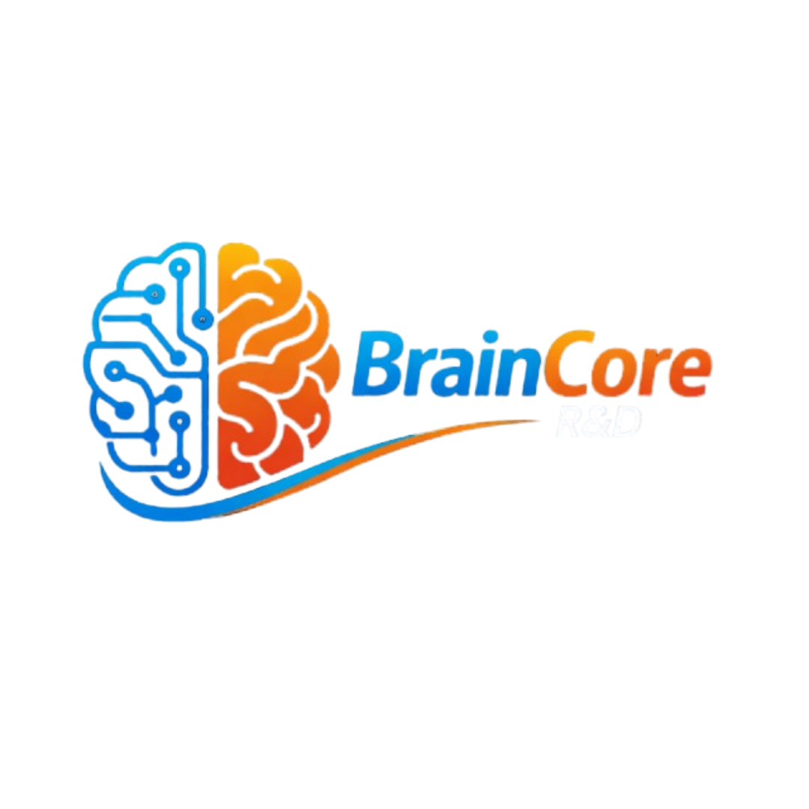

Riset yang jadi paper, bukan cuma prototype.
Divisi RnD Braincore mengubah eksperimen AI menjadi publikasi ilmiah yang bisa diakses akademisi, industri, dan komunitas.

Area riset yang sudah kami publikasikan
Kenapa kami serius dengan publikasi
Salah satu misi Braincore adalah mengedukasi masyarakat tentang pemanfaatan teknologi kecerdasan buatan. Publikasi ilmiah menjadi jalur konkret untuk mewujudkan misi tersebut — menuangkan hasil riset ke dalam paper yang bisa diakses oleh akademisi, mahasiswa, dan praktisi.
Buat kami, menulis paper bukan sekadar dokumentasi akhir. Proses ini memaksa tim untuk merapikan asumsi, membandingkan baseline dengan jujur, dan menyampaikan temuan secara lebih akuntabel — skill yang langsung terpakai saat menjembatani kebutuhan partner, engineer, dan stakeholder.
Yang biasanya kami kemas ke dalam publikasi
- Formulasi problem dan objective metric yang tegas.
- Strategi kurasi data, labeling, dan quality control.
- Perbandingan baseline, eksperimen utama, dan ablation.
- Implikasi deployment, keterbatasan, dan peluang lanjutan.
Topik yang sering kami teliti
Area publikasi kami tumbuh dari kebutuhan nyata yang paling sering muncul pada proyek AI dan analitik.
Computer Vision
Deteksi objek, klasifikasi citra medis, analisis ekspresi wajah, segmentasi, dan ekstraksi warna dominan untuk berbagai aplikasi industri dan riset.
NLP & Information Retrieval
Speech recognition, semantic search, hybrid retrieval (dense + sparse), dan multi-criteria re-ranking untuk koleksi dokumen kaya metadata.
Machine Learning & Optimization
Feature selection dengan metaheuristic, klasifikasi data medis, imputasi berbasis neural network, dan optimasi model untuk akurasi tinggi.
Riset Lintas Domain
Publikasi kami juga mencakup riset terapan di luar AI, seperti kebijakan publik dan administrasi pemerintahan, membuktikan fleksibilitas metodologi RnD Braincore.
Dari ide sampai layak dipublikasikan
Kami menjaga agar riset tidak liar. Setiap paper berangkat dari alur kerja yang disiplin dan bisa dipertanggungjawabkan.
Problem Framing
Merumuskan pertanyaan riset, hipotesis, ruang lingkup, dan ukuran keberhasilan.
Data Curation
Menyiapkan data, anotasi, split evaluasi, dan kontrol kualitas yang cukup ketat.
Experimentation
Menjalankan baseline, model utama, ablation, serta analisis kesalahan untuk memperkuat argumen.
Writing & Review
Merangkum metode, hasil, limitasi, dan implikasi menjadi naskah yang runtut dan dapat dibaca.
Diseminasi
Mempublikasikan, mempresentasikan, dan menerjemahkan temuan ke format yang berguna bagi partner.
Daftar Publikasi
Kumpulan publikasi ilmiah dari tim Research & Development Braincore (2024–2026).
Bangun riset bersama Braincore
Jika Anda sedang menyiapkan penelitian terapan, pilot project AI, atau kolaborasi publikasi, tim kami siap membantu dari perumusan problem sampai penyusunan insight yang layak dipresentasikan.